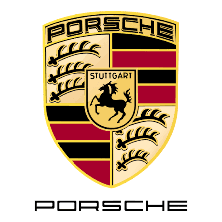
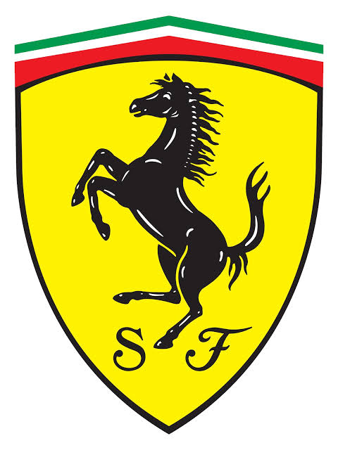
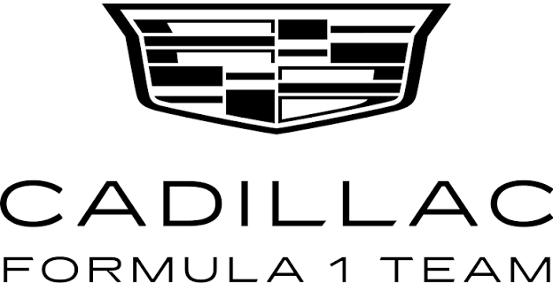

Заводські гіганти
Провідні команди


Toyota Gazoo Racing
Домінуюча команда сучасної ери WEC та багаторазовий переможець Дакара і WRC.
2015Заснування
5×Ле-МанТитули


Porsche Motorsport
Найуспішніший виробник в історії «24 годин Ле-Мана» та символ інженерної досконалості.
1948Заснування
19×Ле-МанТитули


Ferrari
Найстаріша та найтитулованіша команда у Формулі 1, символ пристрасті італійського автоспорту.
1929Заснування
16Титули


Cadillac Racing
Американський виробник, що повернувся в перегони на витривалість з прототипом V-Series.R.
2023Заснування
Учасник класу HypercarТитули